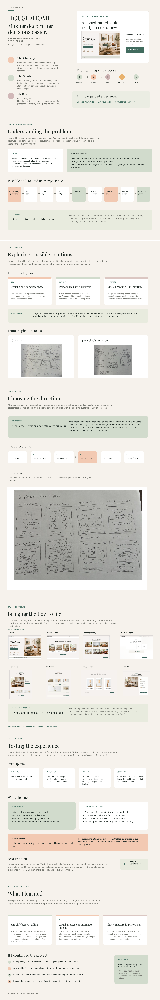

Five-day design sprint · UX case study
House2Home
Helping people turn interior design inspiration into a personalized, budget-conscious starter kit.

Helping people turn interior design inspiration into a personalized, budget-conscious starter kit.
